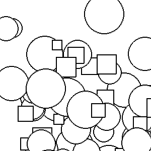

Animation is a common technique that makes use of a biological phenomenon called persistence of vision. This effect allows people to see a sequence of still images and perceive it as motion. It forms the basis of how television, cartoons, and computer graphics can provide the illusion of motion.
At its core, animation is a relatively simple process.
- Draw a picture.
- Do nothing for a relatively short period of time (1/20th of a second or less)
- move the objects in your picture slightly.
- goto 1
Below is a simple animation with a ball falling from the top of the screen.
For relatively simple animations, a straight forward approach works well. The animation magic happens in the for loop on line 12. Line 14 clears the window by filling in a background color. Lines 17-18 draw the circle. Line 21 puts our master piece to the screen. A call to time.sleep(.05) pauses the computer for one twentieth of a second before updating and drawing the next picture.
More complex animations, like 3 falling objects, becomes more difficult to keep straight.
1 2 3 4 5 6 7 8 9 10 11 12 13 14 15 16 17 18 19 20 21 22 23 24 25 26 27 28 29 30 31 32 33 34 35 36 37 38 39 40 41 42 43 44 45 46 47 48 49 50 51 52 53 54 | def complexAnimation(surf):
"""2 balls, and one box falling"""
b1_x = 150
b1_y = 10
b1_r = 20
b2_x = 50
b2_y = 0
b2_r = 10
s_x = 200
s_y = 25
s_side = 10
FILL_COLOR1 = pygame.Color(255,0,0)
FILL_COLOR2 = pygame.Color(0,255,0)
FILL_COLOR3 = pygame.Color(0,0,255)
EDGE_COLOR = pygame.Color(0,0,0)
for i in range(100):
#clear picture
surf.fill( (255,255,255) )
#draw the picture
pygame.draw.circle(surf,FILL_COLOR1,(b1_x,b1_y),b1_r,0)
pygame.draw.circle(surf,EDGE_COLOR, (b1_x,b1_y),b1_r,1)
pygame.draw.circle(surf,FILL_COLOR2,(b2_x,b2_y), b2_r,0)
pygame.draw.circle(surf,EDGE_COLOR ,(b2_x,b2_y), b2_r,1)
box = pygame.Rect(s_x,s_y,s_side,s_side)
pygame.draw.rect(surf, FILL_COLOR3, box, 0)
pygame.draw.rect(surf, EDGE_COLOR, box, 1)
pygame.display.update()
#sleep till next picture
time.sleep(.05)
#update for the next picture
b1_y+=4
b2_y+=4
s_y+=4
def main():
pygame.init()
win = pygame.display.set_mode( (300,300) )
complexAnimation(win)
pygame.quit();
main()
|
With only three objects the amount of data becomes unwieldy. Imagine what would happen if we had 30, or even just 10 objects on the screen. We need to develop a solution that allows us to work with lots of data and the related functions that operate on that data. If you are thinking about using objects you are right! Object are a perfect solution to this problem.
We will create two graphics classes. One for circles and one for squares.
Armed with two classes we can now rewrite our animation in much more compact code.
One can observe that we have nearly tripled the amount of code needed to solve this problem. So why is this better? Two reasons. We have increased the re-usability. Just like functions, classes can be reused over and over. The second reason is that while there is a lot of code, all of the code is in small easy to digest bits. By keeping the code short and easy to understand, we are less likely to make mistakes. However, if you are still worried by the amount of code, we will use a new technique in the next section to reduce the amount of code even further.
The language feature most often associated with object-oriented programming is inheritance. Inheritance is the ability to define a new class that is a modified version of an existing class.
The primary advantage of this feature is that you can add new methods to a class without modifying the existing class. It is called inheritance because the new class inherits all of the methods of the existing class. Extending this metaphor, the existing class is sometimes called the parent class. The new class may be called the child class or sometimes subclass.
Inheritance is a powerful feature. Some programs that would be complicated without inheritance can be written concisely and simply with it. Also, inheritance can facilitate code reuse, since you can customize the behavior of parent classes without having to modify them. In some cases, the inheritance structure reflects the natural structure of the problem, which makes the program easier to understand.
On the other hand, inheritance can make programs difficult to read. When a method is invoked, it is sometimes not clear where to find its definition. The relevant code may be scattered among several modules. Also, many of the things that can be done using inheritance can be done as elegantly (or more so) without it. If the natural structure of the problem does not lend itself to inheritance, this style of programming can do more harm than good.
Take a moment to recall the Circle and Square classes that we created in the previous section. These two classes share a lot of common features: a position, colors, and a set of methods to alter the data. We will use these commonalities to create our base class for all of the graphics objects that we will need for the rest of the semester.
One oddity is the draw() method. We want all graphic objects to be able to draw, but this base class does not know how to draw all of the different shapes. The draw() method is empty, pass is a keyword that says there is nothing in the function body.
With all of the common elements in a base class, we can now create classes that inherit from Graphic.
In the class definition, the name of the parent class appears in parentheses:
This statement indicates that the new Circle class inherits from the existing Graphic class. This means that the Circle class will effectively be a Graphic class. Anything that a Graphic can do a Circle can do. Any data that a Graphic has, the Circle would have as well.
When the base class has a constructor that takes no parameters other than self, we do not need to do anything else. However, when the init method has parameters, it is the responsibility of the child class to pass these parameters to their parent class. This is done in line 5 below. The remaining methods are class specific, such as getReadius() and setRadius(), or overriding the base class’s methods such as draw().
Creating a square class that that extends from Graphic can be done in a similar fashion. This is left as an exercise for the reader. We can use the same objectAnimation code we used before.
There are other benefits of using inheritance. In this section we will extend our code to offer two new improvements that are made possible by the use of inheritance.
Polymorphism is the third property of object oriented programming. When done properly it doesn’t draw much attention. Recall that we created a draw method in the Graphic class to draw. Each child class overrode the draw method to suit its own purpose. Polymorphism means when we call the draw function on a Graphic object, the correct version of draw will be called.
In the following code, we will take advantage of polymorphism by placing all of the graphic objects in a list and using a for loop to perform the draw and update commands.
The use of for each loop means that once the list has been created, the bulk of the code will be unchanged. We will create a function that will supply random objects for us to drop from the sky. Since this function is random, we don’t know what type of thing is coming out of it. That is OK. Each object returned is a graphic object (remember child objects are considered to be instances of thier parent’s class). Since we only call draw() and moveBy() methods, which are part of graphic object, we don’t need to know exactly what type we are working with. Polymorphism will insure that the calls are done correctly.
Below is the new code. I’ve added some randomness to the movement as well to provide more interesting animation. If you are running this code yourself, be sure to implement the square class and include it in your code.

An additional benefit of inheritance is that all updates to the parent class will be available to the child classes. After reviewing our Graphic class, I noticed that we have no way to retrieve or alter the colors used in our object. If we were working with separate classes, we would need to copy this code into each class we had created. With inheritance, we only need to update the parent class and all of the child classes will gain the benefits of the updates.